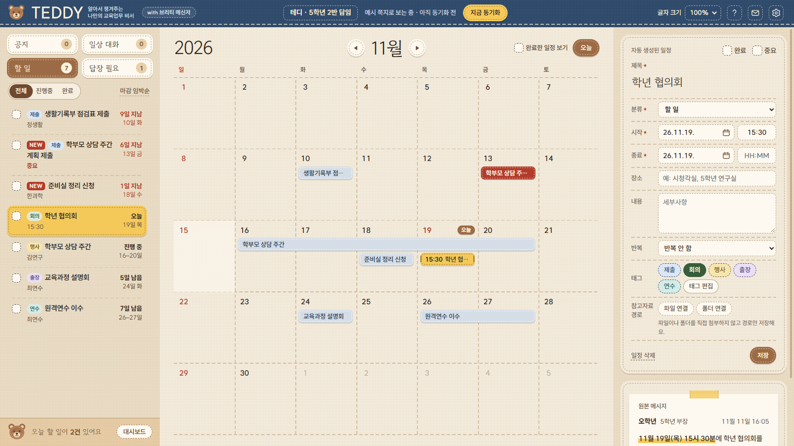

학습준비물 담당 · 예시 쪽지
학습준비물 신청목록 제출
1학기에 필요한 학습준비물의 품목과 수량을 학년별로 모아 3월 13일(금) 오후 4시까지 보내 주세요.
달력에 담긴 일정
경기도교육청 소속 교원 및 직원을 위한 교육업무 비서
TEDDY가 Brity 메신저 쪽지에서 할 일과 날짜를 찾아요. 제출할 서류부터 답장할 쪽지까지, 한곳에서 챙기세요.
Windows 10·11 · 64비트
학습준비물 담당 · 예시 쪽지
1학기에 필요한 학습준비물의 품목과 수량을 학년별로 모아 3월 13일(금) 오후 4시까지 보내 주세요.
달력에 담긴 일정
연구부 · 예시 쪽지
4월 22일(수) 학부모 공개수업에 사용할 지도안을 4월 15일(수) 오후 4시까지 연구부로 보내 주세요.
달력에 담긴 일정
연구부 · 예시 쪽지
7월 8일(수) 오후 3시에 도서실에서 수업 자료 만들기 연수를 진행합니다. 실습에 쓸 노트북을 가져와 주세요.
달력에 담긴 일정

교무기획부 · 예시 쪽지
9월 10일(목) 오후 3시 30분에 교무실에서 부장회의를 엽니다. 부서별 2학기 행사 일정과 협의할 안건을 준비해 주세요.
달력에 담긴 일정

교육과정부 · 예시 쪽지
12월 9일(수) 오후 2시에 시청각실에서 내년 교육과정을 함께 짭니다. 학년별로 이어 가고 싶은 활동을 하나씩 준비해 주세요.
달력에 담긴 일정
쪽지가 쌓이는 아침부터 마감을 챙기는 순간까지. 선생님의 화면에서 TEDDY가 어떻게 일하는지 만나 보세요.
영상을 재생하기 어려우면 영상 파일을 직접 열어 주세요.
기능 체험
화면 구성

AI 연결
긴 쪽지에서도 무엇을 언제까지 해야 하는지 찾아 선생님의 달력에 정리해요.
쉬운 AI 연결방법 보기※ AI모드를 꺼도 규칙 기반으로 쪽지를 자동 분류해요.
받은 쪽지 · 연구부
“공개수업 지도안을 4월 15일 오후 4시까지 보내 주세요.”
달력에 담긴 할 일
공개수업 지도안 제출새 기능 · AI 비서 연결
Claude, ChatGPT(Codex), Gemini(Antigravity)에 업무 계획이나 공문을 올리고 “TEDDY에 일정 등록해 줘”라고 말해 보세요. AI가 자료에서 일정을 찾아 TEDDY 달력에 바로 넣어요.
※ AI 앱이 TEDDY를 쓰기 전에 허락을 물어요. AI에는 일정 정보와 업무 프로필만 보내고, Brity 쪽지 본문은 보내지 않아요.
Claude에게 · 2학기 5학년 업무 계획.hwpx
“이 자료에서 내가 할 일만 TEDDY에 일정으로 등록해 줘.”
TEDDY에 등록된 일정 · 매주 목요일
5학년 학년 협의회TEDDY에 등록된 일정 · 중요
학부모 상담 주간 계획 제출AI와 개인정보
처음에는 AI가 꺼져 있어요. 쪽지와 일정은 내 Windows 계정에 저장되고, PC 안의 규칙만으로도 분류할 수 있어요.
개인정보 처리방침 읽기이용료가 걱정되시나요?
TEDDY는 경기도교육청 교직원 모두를 위한 작은 선물입니다.
설치부터 쪽지 분류, 일정 관리까지.
AI 계정 없이도 내 PC에서 무료로 이용하세요.
이용 안내
TEDDY는 경기도교육청 소속 교원 및 직원을 위한 Windows용 교육업무 비서예요. Brity 메신저 쪽지를 할 일·답장 필요·공지·일상 대화로 나누고, 쪽지 속 일정과 마감을 달력에서 챙길 수 있게 도와줘요.
TEDDY는 Tracking Every Date and Deadline for You의 약자로, ‘당신의 모든 일정과 마감을 챙겨드리겠다’는 뜻이에요.
경기도교육청에서는 2027년부터 기존에 사용하던 GOE메신저를 종료하고, 브리티 메신저(Brity Messenger)로 전면 전환할 예정이에요. 이에 따라 사용기한이 얼마 남지 않은 GOE메신저와의 연동은 지원하지 않아요.
TEDDY는 현직 교사가 업무 편의를 위해 개발한 프로그램으로서 브리티 메신저 개발사가 공식 제작 및 유지보수를 하지 않아요. TEDDY 오류 및 개선사항 문의는 하단의 '개발자 문의'를 눌러 알려주세요.
네. TEDDY 1.1.0부터 설정의 ‘AI 비서 연결’에서 Claude 데스크톱 앱, Claude Code, ChatGPT(Codex) 앱, Gemini(Antigravity)를 연결할 수 있어요. 연결한 AI에게 업무 계획이나 공문을 올리고 “TEDDY에 일정 등록해 줘”라고 말하면 일정이 TEDDY 달력에 들어와요. TEDDY가 꺼져 있어도 AI가 부르면 저절로 켜져요.
TEDDY의 설치와 이용은 무료예요. 선택 기능인 AI 분류에 외부 구독 계정이나 API 키를 연결하면 해당 서비스의 요금이 별도로 적용될 수 있어요.
Windows 10·11 64비트 PC에서 사용해요. 쪽지를 가져오려면 Brity 메신저 PC 프로그램을 실행하고 로그인해 주세요.
처음에는 자동 동기화가 꺼져 있어요. ‘지금 동기화’를 누르면 열려 있는 Brity 창에서 쪽지를 읽어요. 설정에서 자동 동기화 시각을 정할 수도 있어요.
설정의 ‘데이터 관리’에서 백업 파일을 만들고 다른 PC에서 불러올 수 있어요. 모든 기록을 지우려면 ‘데이터 초기화’를 선택하세요.
구글 캘린더로 보내기는 준비 중이에요. 현재 버전에서는 TEDDY 안의 달력에서 일정을 확인하고 관리할 수 있어요.
Windows 10·11 64비트용 설치 파일 · 버전 1.1.0 · 121 MiB